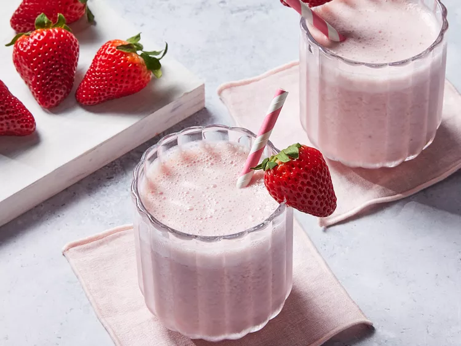

B and L's Strawberry Smoothie

B and L's Strawberry
Smoothie
Home
Description
This flavorful smoothie has the perfect balance of strawberry, milk, yogurt, sugar, and vanilla.
Home cooks enjoy how easy it is to personalize this recipe with frozen fruit and yogurt swaps.
One Allrecipes member shares, "I used my mini Magic Bullet for this and just skipped the ice."
Ingredients
- 8 strawberries, hulled
- ½ cup skim milk
- ½ cup plain yogurt
- 3 tablespoons white sugar
- 2 teaspoons vanilla extract
- 6 cubes ice, crushed
Steps
- Gather all ingredients
- Combine strawberries, milk, yogurt, sugar, and vanilla in a blender. Add ice and blend until smooth and
creamy
- Pour into glasses and serve immediately. Enjoy!